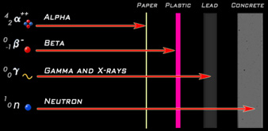

Ionizing radiation comes from an instability in the fundamental building block of all matter- the atom. It is a
phenomenon involving the interchangeability of matter and energy first described by Einstein's Theory of Relativity.
Einstein understood that small amounts of mass can be converted to very large amounts of energy- with the
conversion ratio described by the very large number of the speed of light squared.
A stable atom is made up of negatively charged electrons that revolve in orbit around a nucleus composed of an
equal number of protons. Also contained in the nucleus are neutrons, which have no electrical charge but which are
endowed with a "binding energy" that keeps the nucleus together. Protons and neutrons account for more than 99.9
percent of the atom's weight and determine the basic properties of the element involved.
When an atom has an imbalance between protons and electrons it is considered unstable, or radioactive. Unstable
atoms are called radioisotopes or radionuclides. In the process of achieving stability a part of the nucleus of a
radioisotope disintegrates and emits particles and energy. It does this until it reaches stable equilibrium and is no
longer radioactive. Thus radioactive elements travel through a "decay chain," emitting particles and energy until
they transform into lighter, stable elements at the end of their chain.
The half-life of a radioactive substance describes the time it takes for one half of any quantity of it to decay into
the next lighter element along its decay chain. Often, complete radioactive decay involves very long periods of time.
For example, uranium 238 takes about twenty-eight billion years for half of it to decay into a stable form of lead.
Radiation is ionizing when it has enough energy to remove one or more electrons from an atom with which it
comes in contact. When this occurs, the ionized atom is made chemically reactive and capable of damaging living
tissue. Nonionizing radiation- as in the form of microwaves- falls on the other end of the electromagnetic
spectrum and does not have sufficient energy to physically displace electrons of atoms.
Isotopes, or radionuclides, decay over time. As the radionuclide decays, it changes into a different radionuclide, or "decay product."
A decay state (such as alpha, beta, or gamma) is determined by the spontaneous emission of alpha particles, beta particles, or gamma rays
during the transformation. (See "Types of Radiation"). Radionuclides decay at a fixed rate, called a half life, which is unaffected
by factors such as temperature or pressure. A half life is the time required for half of the atoms of a given radionuclide to decay
(or transform) into a decay product. The decay product may have a longer or shorter halflife than the original isotope, or "parent."
This graphic shows the decay chain of plutonium-238. Half of the plutonium-238 decays into uranium-234 after it's
halflife of 88 years is completed.
The second half of that plutonium will continue to decay for another
88 years. After that, one-half of this
second half (one-fourth of the whole) will have transformed to uranium and
a quarter of the plutonium will still remain. This quarter of plutonium decays for another 88 years, and so on.
After 264 years, there will still be one-eighth of the plutonium-238 in the sample, and this
process will continue every 88 years (one-eighth, one-sixteenth, one-thirty-secondth, etc)
until either 10 halflives have passed (880 years) or the plutonium runs out. After 880 years,
all of the plutonium in the sample will have finished decaying into uranium-234. The oldest uranium-234 in the sample will
still have 244,120 years to go to even reach it's first halflife, transforming into thorium-230.
This transformation process is repeated as decay continues down the chain.
Uranium-234 into thorium-230, thorium-230 into radon-226. As previously mentioned, it is a rule of thumb that
it will take 10 halflives for a mass to transform to one-thousandth it's original mass. Noting the halflives in the above graphic,
we can derive that it will take 880 years for the plutonium; 2,450,000 years for the uranium; 754,000 for the thorium;
and 16,070 years for the radon. Thus, we can say that even though plutonium has an 88 year halflife,
it will take 3,220,950 years for it to decay to nonradioactive (stable) lead, which is itself still a toxic material.
Radon-226 actually decays to Radon-222 and other short-lived isotopes before becoming stable lead.
These have been omitted to maintain the simplicity of the example.
The quantity of any radioactive element will diminish by a factor of a thousand (1000) during the span of 10
half-lives. Thus, in 16,000 years, one gram of radium-226 will decay into a milligram of radium-226 and 999 milligrams of other
decay products. Similarly, in 760,000 years, one gram of thorium-230 will be reduced to a milligram (because of the 76,000 year
half-life of thorium-230).
Here is another example showing the fractional transformation over time of radon-222 into polonium-218.
Note how on the 4th day, 1/2 remains; 8th day, 1/4th remains; 12th day, 1/8th; 16 days, 1/16th; 20 days, 1/32th; 24 days,
1/64th; 28 days, 1/128th; 32 days, 1/256th; 36 days, 1/512th; 40 days, 1/1024th. 1/1024th marks the 10th halflife, and is usually
considered a complete transformation of a sample for practical purposes. (however, logic dictates that there is always an
infinitesimally small half-decrement which does not completely decay- this idea is more complex and is obviously
beyond the scope of this lesson).
|  |
If a nucleus is alpha radioactive it will decay by expelling a
rapidly moving alpha particle comprising two neutrons and two protons. As a
result of losing two protons the atom will change into a different element
which has an atomic number lower by two.
Alpha particles are relatively large and heavy, and have
the same nucleus as the helium atom but lack the two electrons that make helium stable.
Because they are so large in "subatomic" terms, alpha
particles have been likened to large-caliber bullets, and travel at speeds up to ten thousand miles per second. They
tend to collide with molecules in the air and are easily
slowed down. As this happens, they lose
their energy, and being electrically charged, they also lose energy by passing other charged particles.
They can
therefore only travel short distances through air and cannot penetrate the
human skin; a thin sheet of paper or two inches of air can usually stop an alpha particle, unfortunately so can a human cell.
The concern for humans is that should an
alpha-emitting substance be ingested or inhaled, the high-energy particles that are emitted can rip
into the cells of sensitive internal soft tissues and do
great damage in a concentrated region of living tissue.
Alpha particles are emitted by a wide array of heavy elements, including plutonium, a by-product of nuclear
fission; and radon, which seeps into the environment from the uranium-mining and -milling process; and radon gas,
whose decay or "daughter" elements are carried into the atmosphere from uranium-mining wastes.
| 2. Beta radiation - β
A beta is a high speed particle, identical to an electron, that is emitted
from the nucleus of an atom.
Beta particles are emitted from a nucleus when a neutron breaks down into a proton and electron. Usually, the proton stays in
the atom's core while the electron shoots out. The electron, or "beta particle" is expelled in order to balance the electrical
charges and release excess energy. Sometimes, an anti-matter counterpart called a positron is emitted instead,
refered to as Beta+ decay. A positron has the same mass and size
as an electron but has a positive (+) charge versus the electron's negative
(-) charge. Streams of beta particles often travel at close to the speed of light.
Because they move faster than alpha particles, and weigh much less,
beta particles are far more penetrating than alpha particles. Sheets of metal and heavy clothing are required to stop them.
|
Tc-99 is produced by the fission of uranium and plutonium and is not a naturally occurring radionuclide. Reactor wastes such as evaporator bottoms, filters, and sludges may contain Tc-99 . Small amounts of Tc-99 can also be present in LLW generated at medical laboratories and academic institutions. The predominant form of Tc-99 at an LLW disposal facility is the pertechnetate ion (TcO4). Because the pertechnetate ion is highly mobile in groundwater and because Tc-99 has a long half-life, its disposal presents a potential long-term hazard to the public. However, the pertechnetate ion can be reduced to less-soluble forms of technetium that are not mobile in environmental media. The NRC, in its draft Environmental Impact Statement on 10 CFR 61, identified Tc-99 as one of four radionuclides (tritium, C-14, Tc-99, and I-129) that will require site-specific considerations to ensure that performance objectives for long-term environmental protection are met for disposal of commercial LLW. Because Tc-99 is a low energy beta emitter, it poses a greater internal than external hazard to humans. The main route Tc-99 can enter the human body is ingestion.
- half-life: 213,000 years
- beta emitter. Max energy: 0.293 million electron volts (MeV)
- main biological pathway: ingestion
Technetium is a decay product of molybdenum-99, and there are two ways Mo-99 is produced.
The fission product zirconium-99 quickly decays to Mo-99, and is the primary source of molybdenum in reactors.
Another fission product, molybdenum-98 can form Mo-99 in neutron capture.
The nucleus of stable Mo-98 captures a neutron forming a compound nucleus which instantly releases excess energy in
a gamma ray forming Mo-99. This reaction is often called "radiative capture."
Technetium takes 2.1 million years to decay into stable ruthenium-99.
The principal means of producing C-14 is by neutron activation of stable N-14 and stable O-17, in a nuclear reactor. The fission process of the reactor supplies the large source of neutrons necessary to induce the neutron activation. Before the advent of manmade disruptions of the C-14 atmospheric concentration (burning of fossil fuels and atmospheric testing of nuclear weapons), this nuclide was produced, at a relatively constant rate, by cosmic rays impinging on the atmosphere. LLW that contains C-14 includes activated metals from reactors, sealed sources, and animal carcasses from research laboratories. It is usually present in chemical forms, such as carbonates, than can be quite mobile in groundwater systems. Another concern is that C-14, in the form of CO, or CO2, is very volatile. Because C-14 is a low-energy beta emitter, it poses a greater internal than external hazard to humans. The main route that C-14 can enter the human body is by either inhalation or ingestion.
- Halflife: 5,730 years
- beta emitter. Max energy: 0.156 MeV
- main biological pathways: ingestion and inhalation
The nucleus of the stable nitrogen-14 atom captures a neutron (n) and a highly stable compound nucleus is formed.
The N-14 compound nucleus releases some of its excess energy by emitting a proton (p) with an energy of 0.600 MeV to form C-14.
The nucleus of the stable oxygen-17 atom can also capture a neutron (n) resulting in the formation of a highly unstable compound nucleus.
The O-17 compound nucleus releases some of its excess energy by emitting an alpha particle (a).
Carbon-14 decays into stable nitrogen-14 over the course of about 57 thousand years.
I-129 is produced by uranium fission primarily in nuclear power reactors, and is not a naturally occurring radionuclide. I-129 is a long-lived radionuclide present in LLW generated at nuclear power plants. LLW that contains I-129 includes ion-exchange resins, concentrated liquids (e.g. from reactor coolant leaks), filter sludge, cartridge filters, and trash. Disposing of I-129-contaminated waste at LLW disposal facilities is a potential concern because I-129 often exists in chemical forms that are highly mobile in groundwater. Because I-129 is primarily a low-energy beta emitter, it poses a greater internal than external hazard to humans. The main route that I-129 can enter the human body is ingestion. Whether inhaled or ingested, most of the radioactive iodine will dissolve in the body fluids. When dissolved, iodine travels and concentrates in the thyroid. If present in sufficient concentrations, the low-energy beta particle radiating from this nuclide may irradiate the thyroid to the point of inducing cancerous thyroid nodules.
- half-life: 16,000,000 years
- beta emitter. Max energy: 0.150 MeV
- main pathway is ingestion. Ingestion or inhalation. Dissolves in bodily liquids and taken as natural iodine (thyroid)
Antimony (Sb-129) is produced in nuclear reactors as a fission product of either U-233, U-235, or Pu-239. It lasts 43.2 hours and decays to tellurium (Te-129), which over 12 hours transforms into iodine-129. It takes iodine-129 160 million years to decay into stable xenon-129.
Tritium (H-3) is a radioactive isotope of hydrogen. It is naturally produced in very small quantities in the atmosphere. Because of its very small naturally occurring concentration, tritium exists, for all practical purposes, as a manmade isotope. Tritium is primarily used in industrial thickness gauges, luminous paints, nonpowered (self-luminous) light sources, fusion research, thermonuclear weapons, and as a radioactive tracer in chemical and biological experiments. Tritium decays to He-3 with the emission of a beta particle but no gamma ray. Tritium produces a very-low-energy beta particle and is usually considered one of the least hazardous radionuclides. However, since it can replace normal hydrogen in water and other chemical compounds essential for life, tritium poses a unique hazard that can be very mobile within the physical and biological environment, including the human body. Many waste types disposed of in LLW disposal facilities contain tritium. These waste types include reactor evaporator bottoms and institutional and academic research laboratory trash. Tritium is very mobile in groundwater and surface water systems.
- half-life: 12.3 years
- Beta emitter. Max energy: 0.019 MeV
- naturally occuring in small quantities, yet insubstantially, so is considered manmade
Miniscule amounts of tritium occur in nature when cosmic rays bombard nitrogen-14 with neutrons,
releasing carbon-12 and tritium (see first line in diagram). Tritium is so rare in nature it is considered a man-made isotope.
Tritium was first produced in 1934 by bombarding deuterium (Hydrogen-2, H-2) with high energy deuterons as illustrated on line
two of the diagram. The primary means of producing tritium stockpiles with nuclear reactors is by bombarding lithium targets
with thermal neutrons, as illustrated on line three. It is also created when boron particles in reactor coolant and control rods
are activated
in pressurized water reactors (PWR) as on line four of the diagram. Occassionally, tritium is produced as a fission product during ternary
fissioning (unlike binary fissioning, where two heavy elements are released, ternary splits into two heavy isotopes and an
additional light isotope).
Tritium decays to helium-3 through beta minus decay and the release of an antineutrino particle.
Cs-137 is produced by the fission of uranium and is not a naturally occurring radionuclide. The largest source of Cs-137 and potential waste material is from nuclear reactor operations. The gamma-ray of Cs-137 has been used to sterilize medical supplies, milk cartons, and irradiate food. Industrial applications of Cs-137 include the production of plastic shrink tubing (irradiated plastic has the tendency to shrink after being heated), radiography to inspect metal castings and welds for flaws and material defects (e.g., cracks in steel pipes), radioactive measurement gauges for liquid or solid thicknesses (e.g., gauging of automobile sheet steel), treatment of sewage sludge to kill bacteria and viruses, and radiotherapy to kill cancerous tissue. The quantity of Cs-137 waste material generated in medical, academic, or commercial facilities is small compared with the quantity of Cs-137 waste produced as a result of nuclear reactor facilities. Ion-exchange resins used to purify coolant water in a nuclear power plant frequently contain large amounts of Cs-137. The common chemical compounds of Cs-137 are water soluble and will readily move with groundwater unless preferentially retained in the soils, particularly by clay soils. Absorption of cesium by humans takes place primarily through the digestive tract. Cesium and potassium have similar chemical properties because both are alkali metals. Potassium serves a very important function in the body as an electrolyte, and one potential effect of Cs-137 is on the potassium levels in the body in addition to its related radiation effects on the various body tissues.
- Half-life: 30.17 years
- emits 1-2 high energy beta particles
- 85% of all Cs-137 decays emit a 0.662 MeV gamma ray.
- Barium-137 is in secular equilibrium with Cs-137, and produces a gamma ray used to sterilize medical equipment, milk cartons and irradiate food.
Cs-137 is produced in nuclear reactions as a fission product, and makes up a large percentage of spent fuel and long-used reactor cores (millions of curies per core). Cesium-137 has three possible decay chains. Starting off, there is a 6% chance that Cs-137 will decay straight into barium-137 with a larger beta discharge as shown at the bottom. More likely is the 94% chance that Cs-137 will discharge a smaller beta and transform to Ba-137m (metastable isomer). Very soon thereafter, the Ba-137m will either decay to Ba-137 with a gamma ray (90% chance) or with negative electrons (10% chance). Because of Ba-137's small halflife, it's effects are generally attributed to Cs-137 (gamma radiation, etc).
Sr-90 is not a naturally occurring radionuclide. The main source of Sr-90 is from fission
product recovery. Sr-90 emits a high-energy beta particle following decay. Almost no gamma-ray
particles are released from the Sr-90 decay sequence. Due to the high beta particle energies of Sr-90
and its daughter nuclide Y-90, Sr-90 has been used in industrial applications to measure thicknesses
of paper, plastic, rubber, and metal foils. It also has some medical applications such as treatment
for some eye and skin diseases. The largest source of strontium, and the largest potential source
of waste material, is the inventory of Sr-90 stored in commercial spent nuclear fuel. Most of the
LLW generated at nuclear power plants will contain some Sr-90; however, other radionuclides
(e.g., Cs-137) are usually more prevalent and generally determine the waste characterization.
Wastes that contain Sr-90 include both wet and dry wastes such as spent ion-exchange resins, filter
sludge, filter cartridges, evaporator bottoms, compactable and non-compactable trash, and
irradiated components. A smaller fraction of wastes containing Sr-90 are generated from
industrial, institutional, and medical applications. Strontium is very soluble and is transported
readily with precipitation and groundwater deep into soils. As such, it can be taken up by plants
through the roots, which is the principal means by which strontium gets into the food chain.
Since strontium and calcium are so chemically similar, once Sr-90 is ingested, it takes the place of calcium
and concentrates in bone tissue. The name "bone seeker" has been given to such isotopes. Since these areas are near blood-producing
bone marrow, one of the principal health hazards associated with Sr-90 contamination of humans
is reduction in the blood platelet production. Obviously, the presence of the isotope increases the possibility of bone
cancer.
DNA also builds with calcium and will incorporate strontium accordingly.
- half-life: 29.1 years
- high energy beta emitter, Max energy: 0.546 MeV.
- decays to Yttrium-90 (half-life 64 hrs, Max energy: 2.28 MeV).
Strontium-90 is produced in nuclear reactions as a fission product, and makes up a large percentage of spent fuel and long-used reactor cores (millions of curies per core). After 291 years all of the strontium mass will have decayed into yttrium. The Y-90 nucleus usually decays in about 27 days to zirconium-90 with the emission of a 2,284 keV maximum energy beta particle. However, in a very small number of cases (~0.02%) the Y-90 nucleus emits a 523-keV maximum energy beta particle and produces a 1,750-keV gamma ray.
Neither Ni-59 nor Ni-63 is a naturally occurring radionuclide. They are produced by neutron activation of Ni-58 and Ni-62 (both naturally occurring and stable isotopes of nickel) in the structural steels and internal components of nuclear reactor vessels. Nickel is resistant to attack by water or air and, therefore, is often used as a protective coating for other metals or as an alloy to create a corrosion-resistant metal such as stainless steel and Inconel. Limited amounts of these nickel isotopes can enter the environment through operational wastes from a nuclear reactor (i.e., corrosion of stainless steel surfaces and accompanying release of nickel into circulating coolant). Ni-59 decays by electron capture. Ni-63 decays by beta decay and is primarily an inhalation hazard. The major radiological concern with these two nuclides is related to limiting the exposure to people who are decommissioning and dismantling reactors, primarily for reactors in service for more than 30 years. At that point, these two nuclides represent important activation products and will exceed the activity from the other major activation products: Fe-59 and Co-60. Neither nickel isotope is commonly used for medical or industrial purposes. Nickel tends to be easily absorbed by soils. However, the ability of soils to absorb nickel out of groundwater varies widely, depending on soil pH and soil type.
- Ni-59 has a halflife of 76,000 years. It decays by electron capture, and is an x-ray emitter at 1.06 MeV maximum energy.
- By contrast, Ni-63 has a half-life of 100 years and is a beta emitter (max energy: 0.0659 MeV). Ni-63 does not emit gamma or x-rays.
Discussing nickel-59 brings up the subjects of two independent phenomena which are new. Auger electrons are electrons that are emitted from atoms when changing from excited states to lower energy states. This process by itself does not release any x-rays or gamma radiation. Bremsstrahlung, which translates roughly to "decelerated" or brake radiation, is x-ray radiation emitted when an electron hits a positively charged nucleus (a conversion of kinetic energy into electromagnetic radiation). The bremsstrahlung x-rays are released when the auger electrons interact with neighboring nuclei.
Neither Pu-239 nor Pu-241 are naturally occurring radionuclides. Pu-241 is produced within nuclear reactors via neutron absorption by Pu-240 or through multiple neutron absorptions and decays of other transuranic isotopes. Pu-239 is produced in nuclear reactors via neutron absorption by U-238 (the principal naturally-occurring isotope of uranium) and subsequent beta decay. Pu-239 is used extensively as nuclear weapons material as well as an alternate fuel for nuclear reactors. Pu-241 decays primarily by beta particle emission to Am-241. However, a very small fraction decays to U-237. The released radiation is less penetrating than that of most radionuclides, and in particular is comparable with that of tritium. Both plutonium isotopes concentrate in bone tissue once they enter the human body. Both plutonium isotopes are classified in the very high radiological hazard group, (Pu-241 because of its principal daughter product, Am-241, a high-energy alpha particle emitter, and Pu-239 because of the high-energy alpha particles emitted by its decay). Generally, plutonium waste ends up as transuranic or high-level waste; however, small amounts of plutonium can exist in LLW, due to various waste streams from nuclear reactor operations. Few medical or industrial uses of Pu-241 are known. Most medical and industrial uses of plutonium center on Pu-238 for cardiac pacemakers and radioisotopic thermoelectric generators. Pu-238, Pu-239 and Pu-240 isotopes are also used in biological studies. Plutonium's principal radiological hazard for humans occurs when ingested, such as when plutonium-contaminated soil is resuspended in air and subsequently inhaled.
- half-life: 14.4 years.
- Beta emitter with maximum energy of 0.021 MeV
Nb-94, an actinide, is produced from the neutron activation of 93 Nb, the only stable isotope of niobium. Nb-94 is not a naturally occurring nuclide. Nb-94, like Ni-59 and Ni-63, is found in metallic reactor components. The major concern with Nb-94 is in limiting the exposure that people receive who decommission and dismantle reactors, primarily reactors that have been in service for more than 30 years. If decommissioning is delayed for a long time after reactor shutdown, this nuclide would provide the dominant, long-term source of gamma radiation from these components. This nuclide can contaminate LLW waste through corrosion of stainless steel and Inconel surfaces in nuclear power plants and subsequent discharge with the primary coolant. Nb-94 is commercially available and has been used as an external source of gamma rays for laboratory use. Few medical uses for this nuclide have been identified. In general, niobium is easily adsorbed by soils and is not easily leached into the groundwater (it will not migrate appreciably from the original site). When mammals ingest this nuclide, most is excreted within a few days. The fraction that remains is generally uniformly distributed in the body.
- half-life: 20,000 years.
- Emits both beta particles (max energy: 0.470 MeV) and two gamma rays (0.703 and 0.871 MeV).
Co-60 is produced in the structural steels and other alloys of nuclear reactor vessels and internal components from neutron activation of Co-59, the only stable isotope of cobalt. Co-60 is not a naturally occurring radionuclide. Co-60 decays to minimal activity levels within 50 years of generation. However, Co-60 poses an external exposure hazard. Because of its high-energy gamma radiation, Co-60 has been used extensively as a radiation source for both commercial and medical uses. Users include the transportation industry, which uses this nuclide to measure the thickness of automobile sheet steel. The metals industry uses Co-60 as a radiography source to detect flaws in welded joints and casting. The chemical and medical industries use the nuclide as a catalyst in flow studies, drug-metabolism studies, and sterilization of medical supplies. This nuclide is used extensively as an irradiation source for treatment of cancer in humans. Waste reactor components are the primary LLW material containing Co-60. In general, cobalt is easily adsorbed by soils and is not easily leached into the groundwater. The main concern surrounding Co-60 is in limiting the exposure received by persons handling sealed sources containing this isotope or associated with the decommissioning and dismantling of reactors.
- Half-life: 5.272 years
- emits two gamma rays, 1.17 MeV and 1.33 MeV respectively
Multiple neutron absorption of nuclear fuel constituents such as U-238 and Pu-239 produces Cm-242. Small amounts of Cm-242 can enter the primary coolant of nuclear reactors and be removed by filters and/or cleanup resins. Cm-242 is important in LLW disposal primarily because of the radiological daughters produced through the Cm-242 decay scheme. Although Cm-242 decays with a relatively short half-life, its radiological daughters, such as Pu-238 with a half-life of 86 years, can persist for much longer in radioactive waste. There are some commercial applications of Cm-242. For example, this nuclide has been used as the power source for an isotopic power reactor. There are few medical uses for this nuclide. In general, curium is easily adsorbed by soils and is not easily leached into the groundwater. The principal radiological hazard associated with this nuclide is due to its high-energy alpha particles. The principal risk is due to inhalation of this nuclide. Cm-242 can decay and concentrate in bone tissue once it enters the human body.
- half-life: 163 days, and decays to Plutonium-238 (halflife: 86 years)
- Emits two high-energy alpha particles; 6.07 and 6.11 MeV
- Daughter product Pu-238: alpha emitter, 5.5 MeV; 86 year half-life
Pu-241, produced by neutron absorption of U-238 and Pu-239, decays to Am-241. The decay process also produces gamma-rays and x-rays. Am-241 enters the environment from the activities related with reactor operations and decommissioning, atomic weapons production, and when sealed sources containing Am-241 are manufactured, used, and disposed. One major application of Am-241 as a radioactive sealed source is in smoke detectors (e.g. the radiation from Am-241 is used to detect the presence of smoke or heat sources). The regulatory limits for Am-241 disposal and personnel exposure are very restrictive. Relatively small concentrations of Am-241 can become a major contributor to the calculated doses to individuals in performance assessment calculations of an accidental release involving this radionuclide. This is primarily due to the long half-life and high energies of the alpha particles emitted during the decay process. Am-241 is not very mobile in soils and only small quantities can be expected to migrate within the soil to the biosphere. As stated, Am-241 is primarily an alpha emitter. It is most dangerous to animals and humans when it is taken into the body via inhalation or ingestion where it can interact with living tissue.
- half-life of 432.7 years. Emits an alpha particle with energy of 5.49 MeV
- Also emits gamma and x-rays. Most intense gamma ray energy is 0.060 MeV